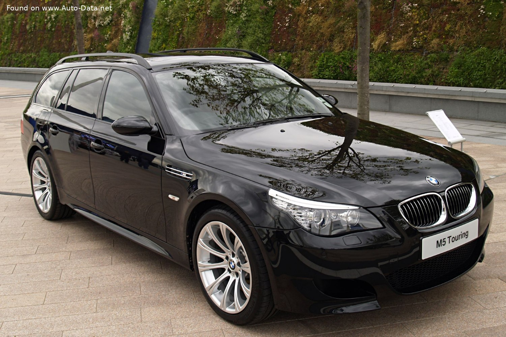
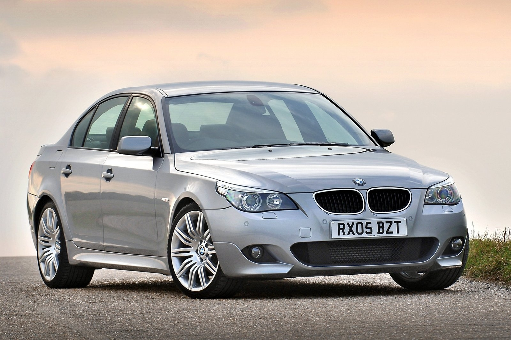

BMW
5 Series E60
(2003-2007)
Виготовлення BMW 5 Series E60-E61
BMW 5 Series (2004-2007)

BMW 5 Series (2003-2007)
Виготовлення BMW 5 Series (2003-2007) - дивитись
Опис
Дизайн розробили Кріс Бенгл (Chris Bangle) і Едріан Ван Хоойдонк (Adrian van Hooydonk). Екстер'єр 5 серії отримав відточені, виразні лінії і динамічні форми. Зовні нова модель нагадує попередницю дуже віддалено: округлий передок, стесаний з боків капот і вузькі фари, що заходять на боковини. Усередині кожної фари - два круглих елемента: один з вбудованим ксеноновим прожектором (за доплату він буде повертатися слідом за передніми колесами, допомагаючи краще висвітлювати віражі), другий - зі звичайною «галогенкою». Обидва оточені ободками, як і на пострестайлінговій попередній моделі. В самих куточках фар змонтовано по п'ять помаранчевих світлодіодів - це бічні «габарити». На задньому бампері смужки відбивачів-катафотов.Краш-тест BMW 5 Series E60 (2003-2007) Euro NCAP
Висновок
5-а серія має дуже міцний і надійний пасажирський салон. Після внесення змін до конструкції рульової колонки, майданчика для лівої ноги, обшивки дверей, дверних замків, подушок безпеки та програмного забезпечення, BMW 5 був допущений до повторних випробувань. При повторному проведенні лобового та бічних ударів об перекриття та стовп автомобіль заробив чотири зірки. При лобовому ударі високе навантаження на грудну клітку водія відзначили датчики манекена, проте захист при ударі збоку був кращим. Інтелектуальна сигналізація про непристебнуті ремені безпеки встановлена у передніх сідків.
Офіційні сторінки BMW в Інтернеті
InstagramYoutube
Website
Instagram (Україна)
Facebook (Україна)
Website (Україна)